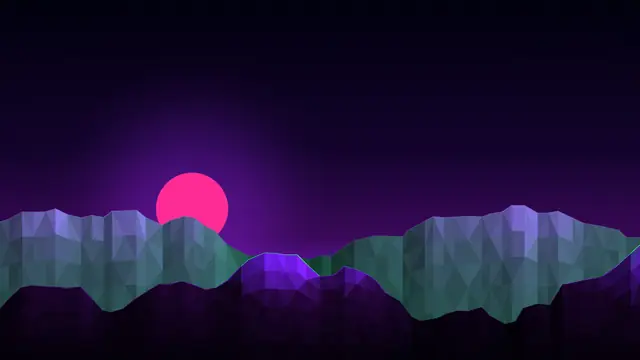
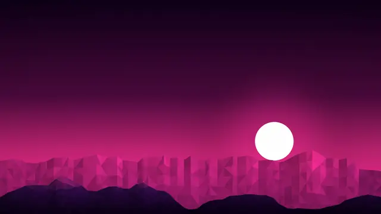
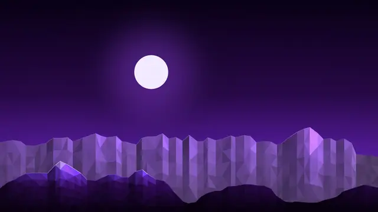
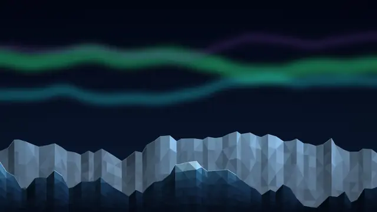

v0.3.0 · built on Zorin OS 18.1
The AI operating system that lives on your machine.
Noctra OS rebuilds Zorin OS 18 around local models and coding agents. Ollama runs on your hardware, six agents sit in the start menu, and every tool works with a mouse.

$ zom doctor zorin-ai doctor ---------------- OK OS: Zorin OS 18.1 OK Ollama: running OK Ollama: 2 local model(s) OK mise: runtimes resolve OK node, python 3.12, go OK Herdr OK VS Code $
~/local
Your models run on your own hardware.
Ollama starts with the system and listens on 127.0.0.1 only. The installer pulls qwen2.5-coder:7b for code and nomic-embed-text for embeddings. After that download, chat, completion and retrieval need no network, no account and no API key.
In the file manager
NautilusRight-click any file. The local model reads it and answers in a dialog.
In the editor
VS Code + ContinueContinue ships pre-configured. Open a project and the assistant is already there.
In the model manager
AI ModelsPick a model from the list, or run zom models pull <model>.
zom doctor checks all of it
~/agents
Six coding agents, one click from the start menu.
Each launcher opens a terminal and looks for the agent's CLI. The first time, a dialog offers to install it with npm. Node already ships with the system.
Run several at once. Herdr keeps persistent terminal workspaces for coding agents, so a session survives closing the window.

Codex
OpenAI Codex CLI@openai/codexClaude Code
Anthropic Claude Code CLI@anthropic-ai/claude-code
OpenCode
OpenCode terminal agentopencode-aiGrok
Grok CLI@vibe-kit/grok-cli
Gemini CLI
Google Gemini CLI@google/gemini-cli
Qwen Code
Qwen Code CLI@qwen-code/qwen-code
Noctra ships launchers, not the agents. Hosted agents need their own account and a network connection. Agent names and logos belong to their projects.
~/desktop
Matte black, with amber only where you are working.
The shell is charcoal and flat. Borders stay at one pixel, corners at four, and the accent appears for focus and active states. One palette file generates the shell, GTK, VS Code, Herdr, btop and terminal colors.
JetBrains Mono
The shell, terminal and editor share one monospace face, so the whole machine reads as a single surface.
AI-first menu
The stock category tree is replaced. Agents and Local LLM come first; everything else is still in All Apps and search.
White glyphs
Menu and category icons are redrawn in white so they hold up on the dark panels.




Five polygonal 4K scenes. Cycle them with zom bg next.
~/stack
A developer machine that is ready on first login.
The provisioner installs the toolchain, the apps and the glue between them. New user accounts inherit all of it.
Runtimes
Managed system-wide by mise
- Node LTS
- Python 3.12
- Go
- Ruby
- clang
- Docker + Compose
Terminal
Fast tools, themed to match
- Starship
- lazygit
- lazydocker
- btop
- bat
- eza
- fd
- fzf
- ripgrep
- zoxide
- neovim
- tmux
- gh
Apps
Installed from apt and Flathub
- VS Code
- Chromium
- Obsidian
- LibreOffice
- OBS Studio
- Kdenlive
- Mission Center
- CopyQ
- LocalSend
- Flameshot
- MPV
- Pinta
Mouse-first
Nothing in the daily workflow needs a terminal. The terminal is there for the agents.
Clipboard history
CopyQ keeps 1000 entries across reboots, including images, searchable from the tray.
Maintenance
zom update refreshes apt, Flatpak, runtimes and models. zom-menu does it with buttons.
Safe to re-run
Every installer module is guarded, so running it again after an update changes nothing it doesn't need to.
~/install
Two ways in.
Turn an existing Zorin OS 18 install into Noctra with one command, or build an installer ISO with everything baked in.
Already on Zorin OS 18
Run the installer
Clones the repository, then runs the provisioner module by module. Read it first if you prefer: git clone https://github.com/dazeb/noctraos.
curl -fsSL https://raw.githubusercontent.com/dazeb/zorin-ai/main/boot.sh | bash
- Flags.
--skip-aileaves out Ollama and models.--skip-guileaves out apps and theming. - Afterward. Log out and back in so the new start menu loads.
Fresh disk
Build the Noctra ISO
A remastered Zorin OS 18.1 image that installs the workstation on first login. There is no hosted download yet, so you build it yourself.
sudo ./iso/build-zorin-ai-iso.sh Zorin-OS-18.1-Core-64-bit.iso noctra.iso
- Interactive. Click through the normal installer. A terminal on first login builds the rest.
- Unattended. Set
ZORIN_AI_UNATTENDED=1at build time. Boot, wait, and land on a finished desktop. Bake throwaway credentials only.
Release v0.3.0. Tested end to end in a clean VM: full install, repeat runs, first-boot provisioning, and an unattended install from the custom ISO.